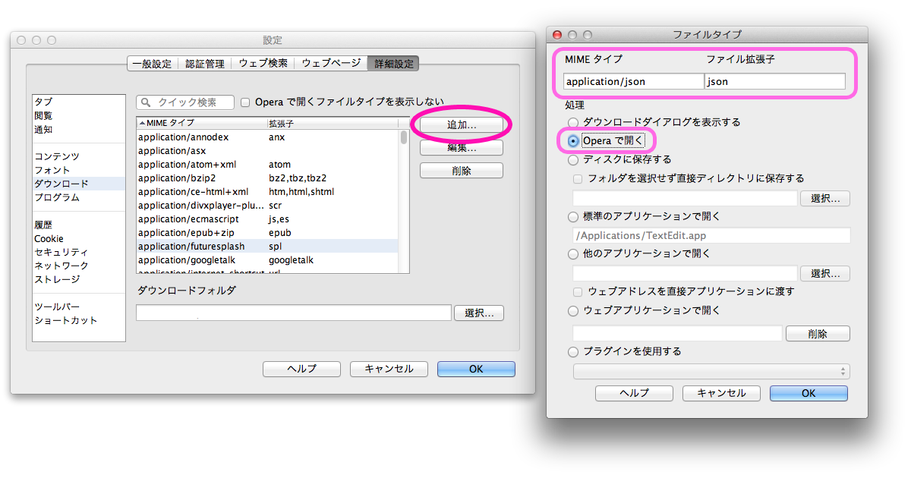
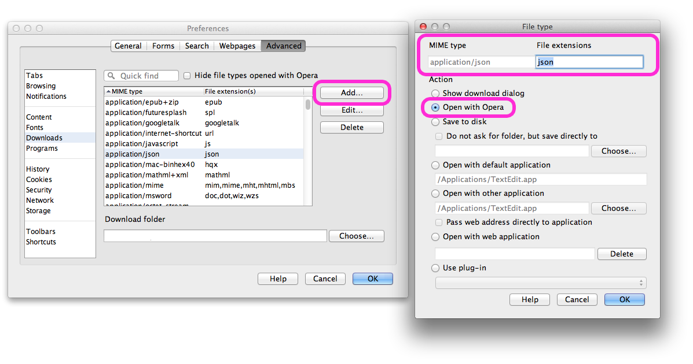

Operaでtwicli使用中にダウンロードダイアログの表示を避けるには
Operaでtwicliを使用する際、一部の操作（ツイートの削除やfavなど）を行うと、ファイルのダウンロードを促すダイアログが表示されてしまうことがあります。
これを避けるためには、Operaの設定を次のように変更する必要があります。
- 設定→詳細設定→ダウンロードを開きます。
- 追加ボタンを押します。
- MIMEタイプ: 「application/json」, ファイル拡張子: 「json」, 処理: Operaで開く を入力/選択します。
- OKボタンを押してダイアログを閉じます。

このダウンロードダイアログが表示されるようになったのは、Twitter API 1.1へのバージョンアップに伴ってXML形式のサポートが廃止されjson形式のみになったことが原因です。
How to avoid download dialog in twicli with Opera
Some of operations (e.g. deleting tweets, make tweets favorites) in twicli may cause displaying download dialog unexpectedly in Opera. To avoid this, the settings below are required.
- Go to Opera preferences -> Advanced -> Downloads.
- Press Add button.
- Enter MIME type: "application/json", file extension: "json", and select action "Open with Opera".
- Press OK to close the dialogs.

This is because XML-form API is obsoleted and only json-format API is supported in Twitter API 1.1.